Showing 38 of 38 products
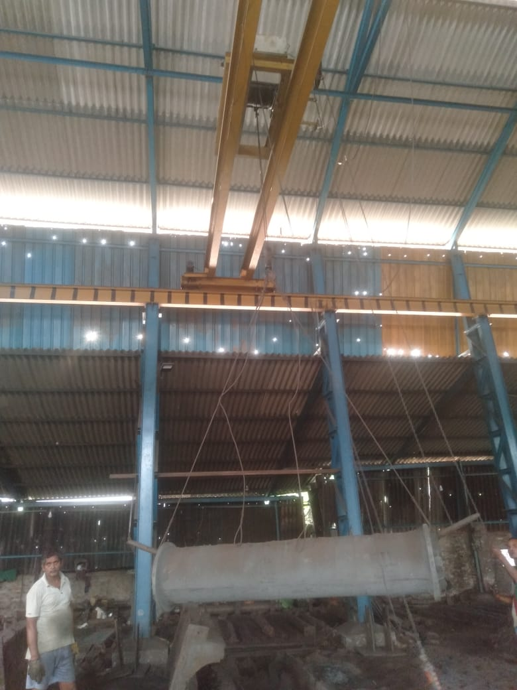
SLK-PM-001
Refiner Plates & Fillings
CI/SS precision-machined refiner plates for high-speed paper pulp processing. Custom profiles available.
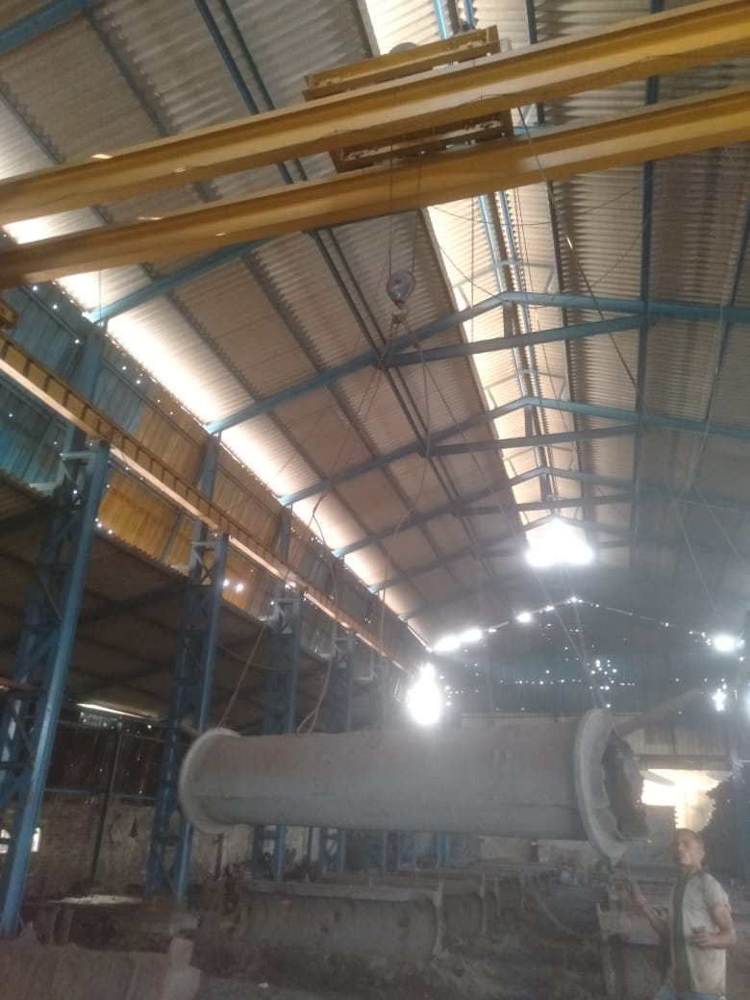
SLK-PM-002
Dryer Brackets & Housings
Cast iron dryer brackets and housings engineered for paper machine dryer cylinders and supporting frames.
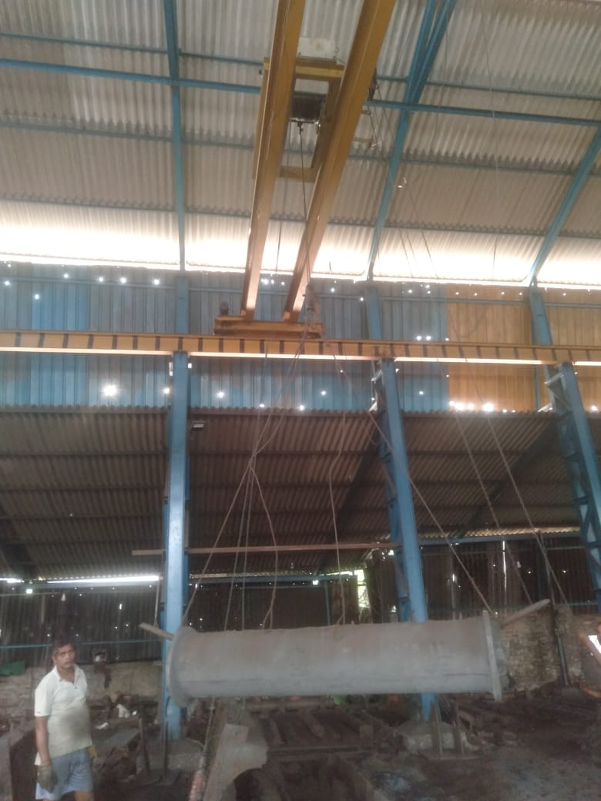
SLK-PM-003
Screw Conveyors
Heavy-duty screw conveyors in CI/MS for pulp and paper stock transfer in mill environments.

SLK-PM-004
Tanks & Pressure Vessels
MS/SS fabricated tanks and pressure vessels for paper mill chemical and stock storage applications.

SLK-PM-005
Rotors, Shafts & Impellers
Precision-machined rotors, shafts and impellers in CI/SS/Bronze for paper stock pumps and agitators.
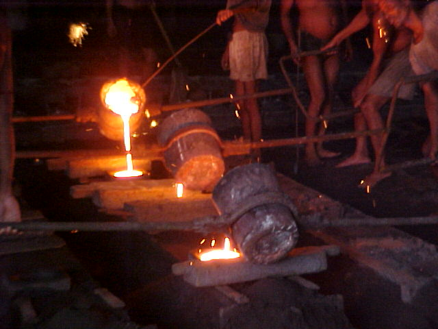
SLK-PM-006
Agitator Blades
SS/CI agitator blades for paper pulp mixing tanks — custom pitch, diameter and material on request.
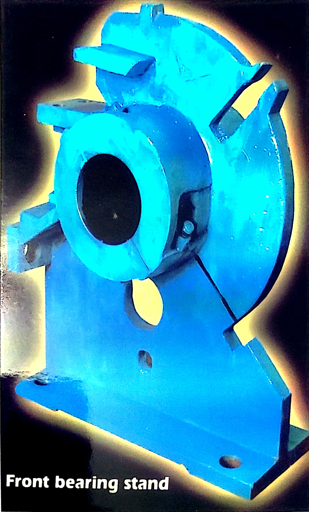
SLK-PM-007
Screen Plates
SS screen plates with precisely drilled/slotted perforations for pulp screening and classification equipment.
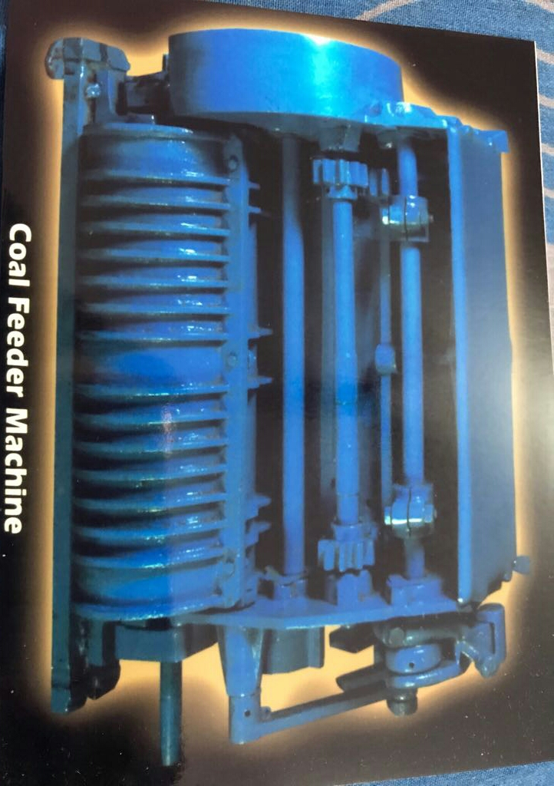
SLK-PP-001
Boiler Spares
High-temperature-resistant boiler spares including tubes, headers, drums and pressure part castings for power plants.

SLK-PP-002
ESP Parts
Electrostatic precipitator components — collecting plates, discharge electrodes, rapper systems and rapper shafts.
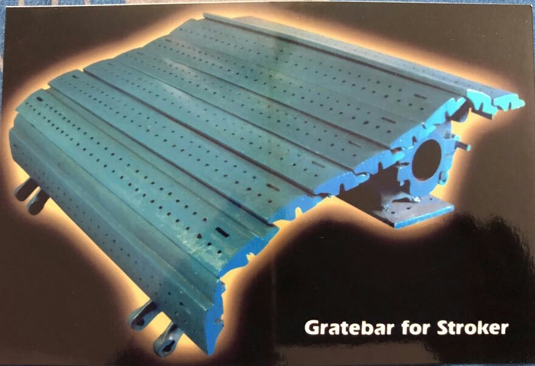
SLK-PP-003
Dust Collector Parts
CI/MS fabricated dust collector housings, hopper sections, rotary air locks and conveying components.
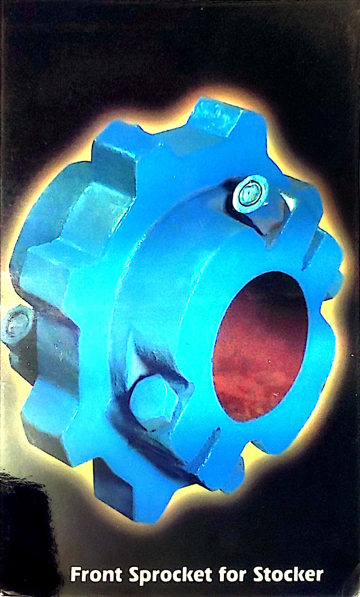
SLK-PP-004
O&M Spares
Operations and maintenance spares for thermal power stations — bearings, seals, wear parts, gaskets and fasteners.
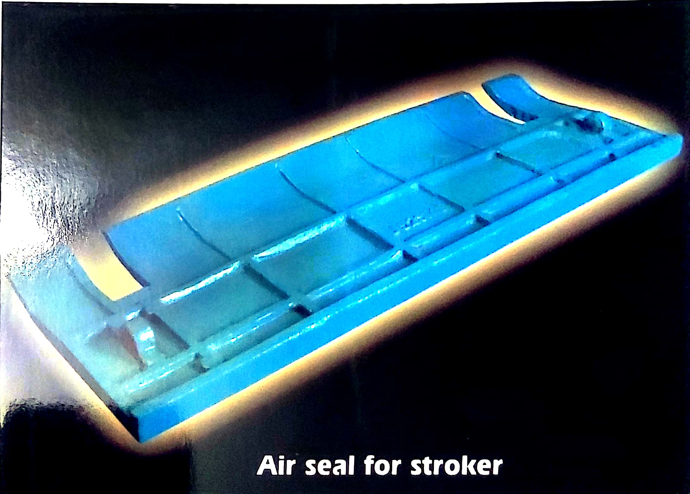
SLK-TI-001
Stove Tubes
Heat-resistant stove tubes for tea factory fired boiler systems — available in various diameters and lengths.
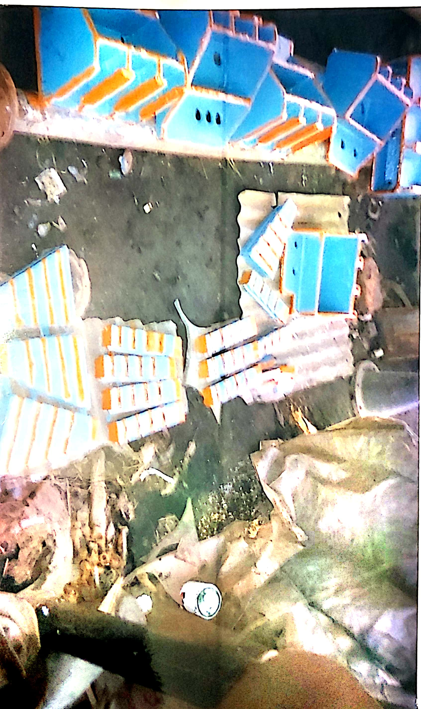
SLK-TI-002
Economiser Tubes
Steel economiser tubes for heat recovery in tea factory boiler systems, improving fuel efficiency.
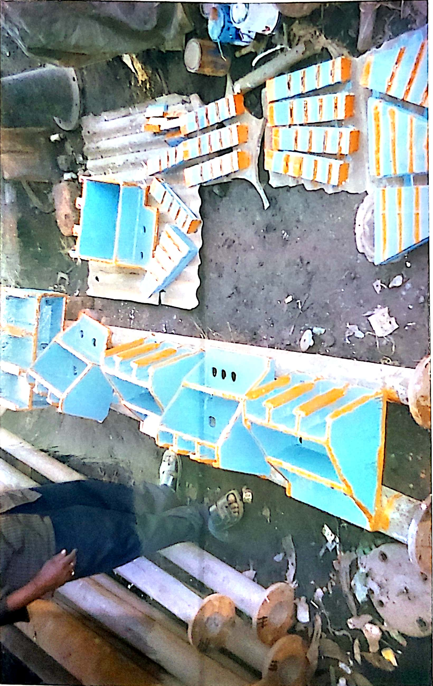
SLK-TI-003
Ariel Flow Fans
CI/MS centrifugal and axial fans for withering troughs, dryers and boiler air supply systems in tea factories.
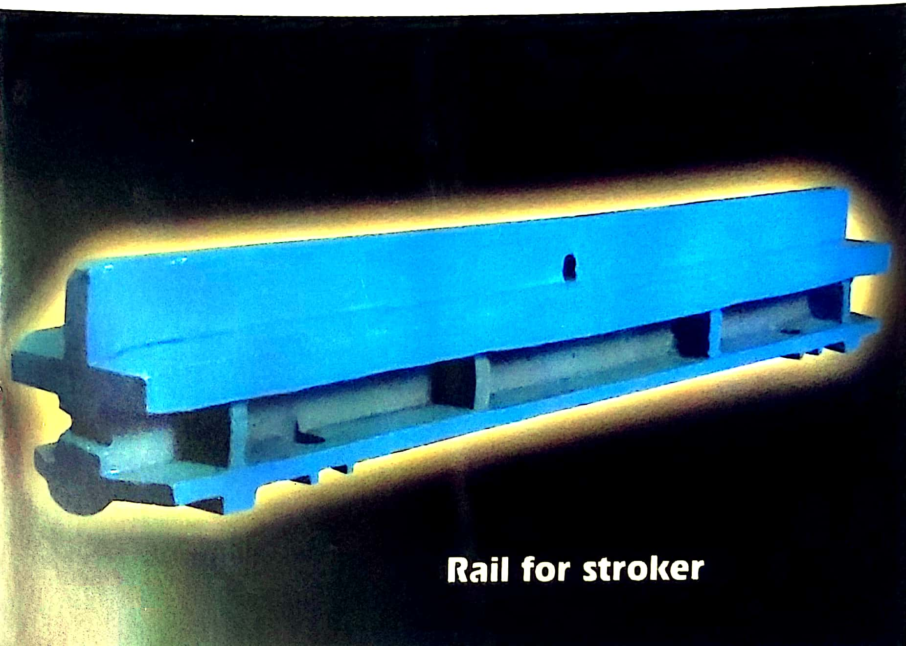
SLK-TI-004
Gas Burners
Industrial gas burners for tea dryer machines and withering trough heaters — precision flame control design.
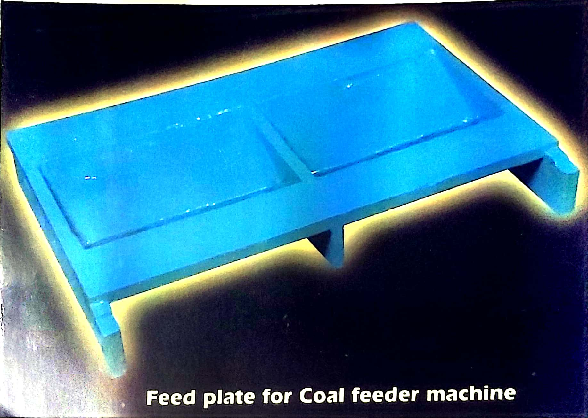
SLK-TI-005
Storage Bins
MS/SS fabricated storage bins and hoppers for green leaf, made tea and fuel storage in processing facilities.
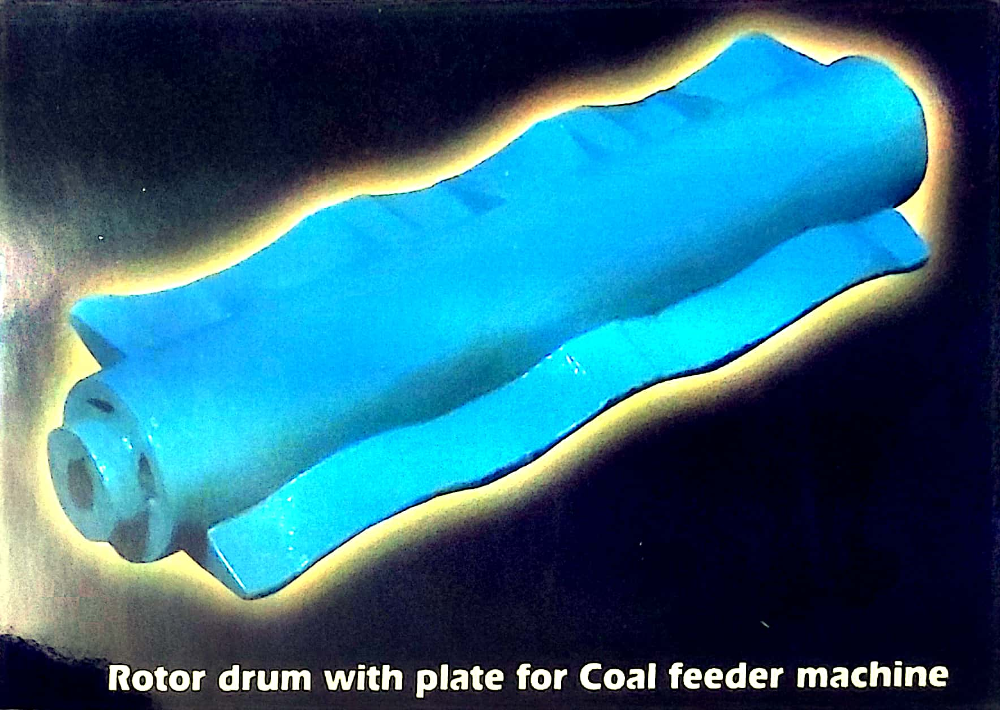
SLK-TI-006
Feed Hoppers
CI/MS feed hoppers for withering trough loading systems and CTC/orthodox leaf-feeding machinery.
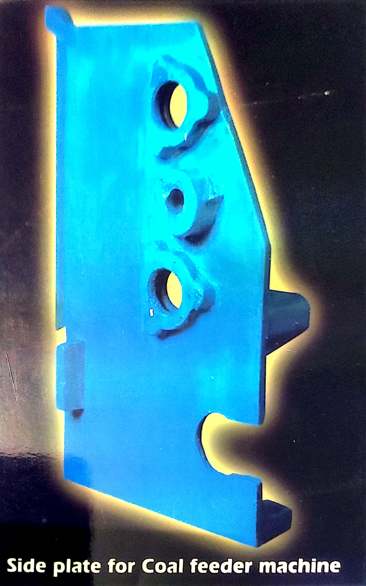
SLK-PL-001
CI Double Flange Pipes
Cast iron double flange pipes, 80–1200mm dia. IS 7181 / IS 1538 compliant. Suitable for water, sewage and industrial fluid transport.
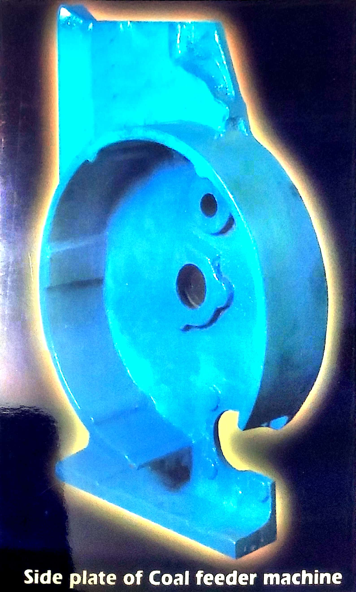
SLK-PL-002
Puddle Pipes
CI puddle pipes (collar pipes) for embedded water-stop applications in retaining walls and dams.
SLK-PL-003
Bends, Tees & Reducers
CI flanged bends (90°/45°/22.5°), equal/unequal tees and tapers — matching pipe standards IS 7181.
SLK-PL-004
Collars & Joints
CI flanged collars, gland joints and mechanical couplings for pipeline connections in water and sewage systems.

SLK-BS-001
Stoker Components
ABL & IJT compatible stoker parts including grate bars, side plates, drive shafts and bearing housings in CI.

SLK-BS-002
Feeder Parts
Fuel feeder and screw conveyor components for ABL/IJT boiler systems — shafts, helical screws and troughs in MS/CI.

SLK-BS-003
Ash Handling Plant Parts
CI/MS ash hopper components, drag chains, clinker grinders and conveyor troughs for boiler ash handling systems.

SLK-BS-004
Recovery Boiler Parts
Wear-resistant CI/alloy steel parts for chemical recovery boilers — smelt spouts, floor tubes and support castings.
SLK-GC-001
Ferrous Castings (CI / CS / SS)
Grey CI, carbon steel and stainless steel castings — rough and finish-machined, as per customer drawings and IS standards.
SLK-GC-002
Non-Ferrous Castings
Bronze, brass and gunmetal castings for bearings, bushes, valves and marine applications — machined to tolerance.
SLK-GC-003
MS & SS Fabrication
Mild steel and stainless steel fabrication — structural frames, platforms, tanks, ducts and custom assemblies with full welding support.
SLK-AG-001
Agricultural Rings
CI agricultural rings for power tillers, cultivators and irrigation pump systems — standard and custom sizes.
SLK-AG-002
Agricultural Wheels
Cast iron wheels for threshers, power tillers and agricultural implement trailers — high-load bearing capacity.
SLK-AG-003
Custom Agri Components
Custom CI/MS castings for tractors, harvesters and irrigation machinery — manufactured as per OEM drawings.
SLK-MH-001
Manhole Covers
Heavy-duty CI/ductile iron manhole covers — D400/E600 load class, anti-slip surface, single or double seal.
SLK-MH-002
Manhole Frames
CI flanged and unflanged manhole frames for road, footpath and industrial installation — matching CI covers.
SLK-MH-003
Gratings
CI/ductile iron road gratings and inlet gratings for storm water drainage — various sizes and patterns available.
SLK-MH-004
Surface Boxes
CI surface boxes for water and gas valves, fire hydrants and utility access — lockable lid options available.
SLK-CM-001
As Per Drawing Manufacturing
We manufacture any casting, machined part or fabricated component strictly as per customer-supplied drawings and specifications.
SLK-CM-002
Design Support Services
Engineering design support for new component development — pattern making, prototype casting and design-for-manufacture guidance.
SLK-CM-003
Full In-House Production
Complete in-house foundry, machining and fabrication facilities — single-source supply from raw material to finished product delivery.
No products found in this category.